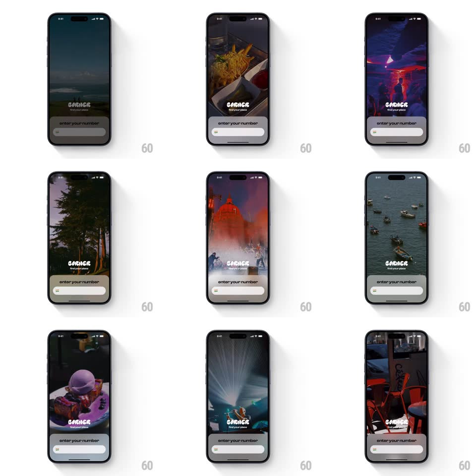

Media
Frame-by-frame

Rebuild this interaction 1:1: Corner's intro - over the phone-number entry card, the background video shuffles through atmospheric venue scenes (neon bar, sunset field, ramen, concert, boats, dessert, stage lights, cafe) in slow crossfades.

Rebuild this interaction 1:1: Corner's intro - over the phone-number entry card, the background video shuffles through atmospheric venue scenes (neon bar, sunset field, ramen, concert, boats, dessert, stage lights, cafe) in slow crossfades. ## Integration Integration: stack-agnostic spec - springs given as stiffness/damping, timed motions as duration + curve; map every value to your framework and animation library of choice. ## Scene Full-screen moody lifestyle video; centered-low the "CORNER - find your place" wordmark; a bottom card holds "enter your number" with a phone field (country prefix) inside a white rounded bar. ## Motion spec Pattern: ambient background carousel behind a static form. - The background crossfades between venue clips every ~1.2s (500ms crossfade, slight scale 1.04 -> 1 drift during each clip so stills feel alive). - Each clip carries its own color grade (neon pink, dusk green, warm orange) - the white wordmark and form card stay constant, picking up the scene's spill light. - The form card never animates; its input focuses normally with the keyboard rising over the video. - A slow dark scrim at the bottom third keeps the form readable as scenes change. ## Calibration - Shuffle cadence is steady (~1.2s per scene) - fast enough to feel like a montage, slow enough to read each place. - The scrim gradient is fixed; scenes change behind it without changing form contrast. ## Reduced motion Background swaps without crossfade or drift; one static scene when playing is not essential. ## Don't miss - Scenes are all nightlife/food/venue textures - no people facing camera, just places. - The wordmark is the only brand element and it sits low-center, above the form, never center-screen.